Synthetic graphite underpins every technology which requires lithium-ion batteries.
95%+
of the world’s supply comes from one country.
Karbana is changing that.
We want to enable new graphitisation capacity to be built in places where it is currently impossible, based on our low-energy, high-throughput synthesis technology.
Supported by

